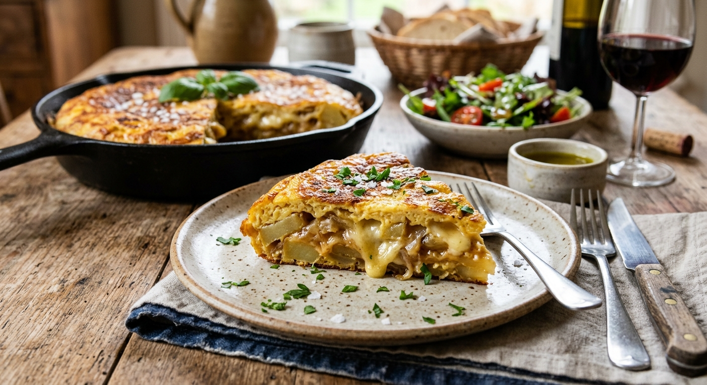
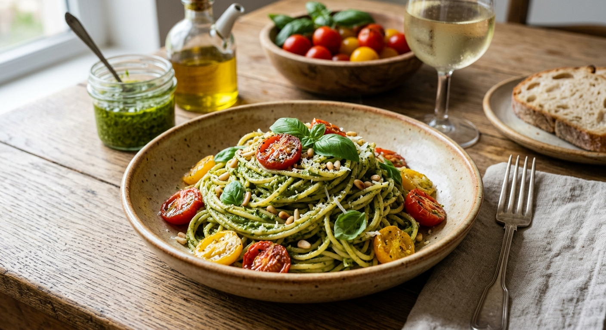

Saltar al contenido principal
Recetas del Hogar
Inicio
Contacto
Información
Salados
Postres
Sección
Recetas saladas

Tortilla de papa y queso
Descargar PDF

Pasta al pesto
Descargar PDF
Pollo al limón
Descargar PDF